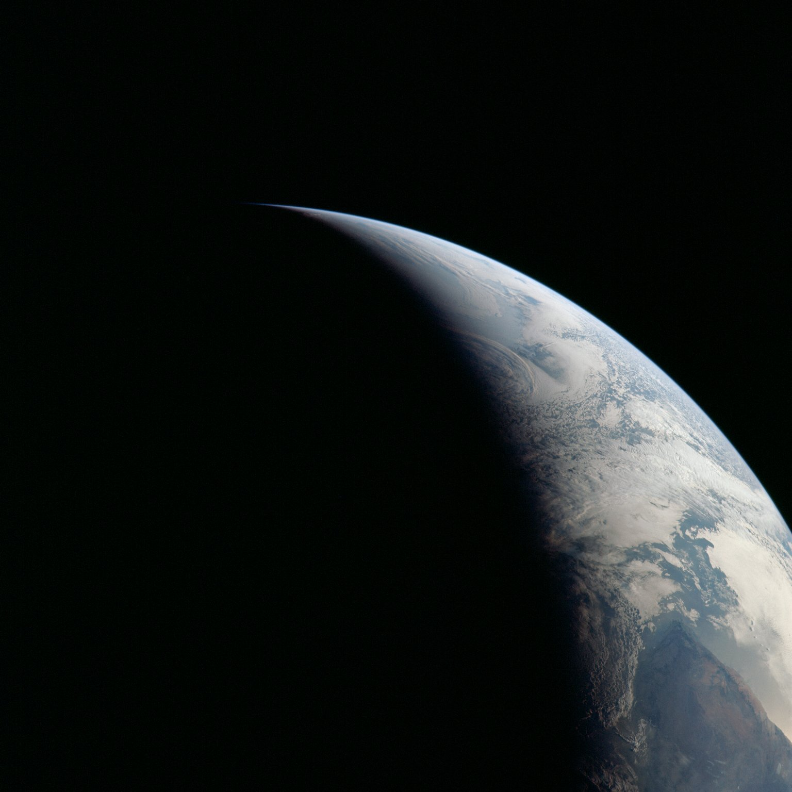
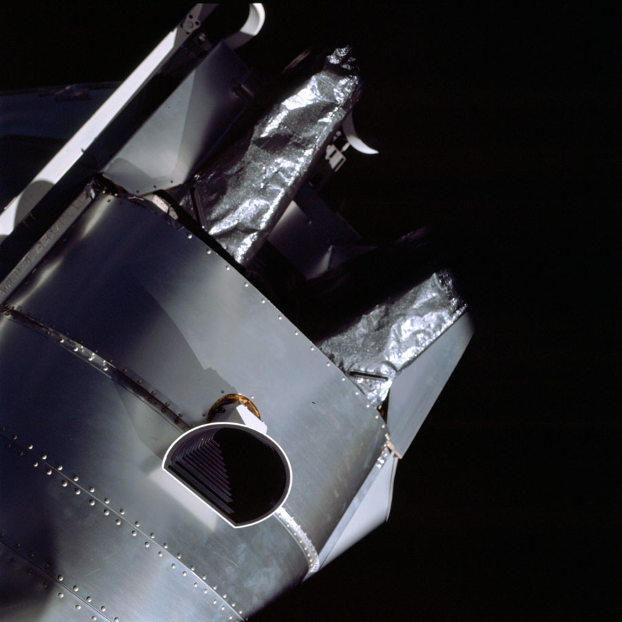

Stars or Sun/Earth Navigation?
⚠️ The Situation
- Need to align spacecraft navigation platform for accurate course corrections
- Normal method: sight on known stars using alignment telescope (AOT)
- Problem: Explosion created debris field—"sparklies" everywhere
- Through telescope, debris looks identical to stars
- Impossible to determine which points of light are real stars
- Without proper alignment, can't aim precisely for Earth
- A big course-correction burn is coming after the Moon flyby — the platform must be checked before then
☀️ SUN/EARTH TERMINATOR
Check the alignment on the Sun — the one light no debris can fake

✓ Advantages
- Sun is unmistakable (brightest object)
- Earth terminator (day/night line) clearly visible
- No confusion with debris
- Faster than searching for stars
- "Good enough" accuracy for course corrections
✕ Disadvantages
- Less precise than star alignment — the Sun is a big, fuzzy target compared to a pinpoint star
- Manual maneuvering to the check attitude is tricky
- Small errors could compound over 200,000 miles
- Not the standard NASA procedure
⭐ STAR SIGHTING
Use alignment telescope to sight on stars

✓ Advantages
- Most accurate navigation method available
- Standard Apollo procedure (proven technique)
- Provides precise platform orientation
- Computer can calculate exact trajectory
✕ Disadvantages
- Debris field makes stars invisible
- Cannot distinguish sparklies from real stars
- Multiple false sightings likely
- Could misalign platform completely
- Time-consuming trial and error
Lovell described the problem in his own account:
"A swarm of debris from the ruptured service module made it impossible to sight real stars."
— Jim Lovell, Apollo Expeditions to the Moon (NASA SP-350)
🤔 WHAT SHOULD THE CREW DO?
👆 Choose one of the options above 👆
NASA's Decision
✓ SUN/EARTH TERMINATOR METHOD
Mission Control made the call: forget the stars — check the platform against the Sun, the one light in the sky no piece of debris could imitate.
GET ~73:46 - The Sun Check:
The Process:
- Step 1: Houston radioed up the attitude angles; Lovell and Haise carefully maneuvered Aquarius
- Step 2: Lovell watched through the AOT (Alignment Optical Telescope) for the Sun
- Step 3: If the guidance platform was aligned correctly, the Sun would appear right where the computer predicted
- Step 4: It did — within about 1 degree. "Good enough" to trust for the burns ahead
Jim Lovell's Skill:
Commander Lovell had trained for this. As a Navy pilot, he'd navigated by the sky over the Pacific Ocean. Now he did the same—just 200,000 miles higher. From the real mission transcript:
"Okay. It looks like the Sun check passes." — Jim Lovell, GET 073:47:05
"We understand it checks out. We're kind of glad to hear that." — Vance Brand, CapCom in Mission Control, GET 073:47:10
Result: Alignment Confirmed!
The Sun showed up where the computer predicted — off by less than one Sun-width (about half a degree), well inside the 1-degree limit.
Mission Control cheered. The platform could be trusted.
The Trick That Kept On Giving:
The same keep-it-simple idea returned for the hand-flown MCC-5 course correction (~GET 105:18): with the computer powered down, Lovell kept Earth's terminator — the day/night line — centered in the COAS gunsight while the crew timed the 14-second burn. Sun, Earth, eyeballs, and a watch steered them home.
Why This Mattered:
- ✓ Improvisation works: When high-tech fails, go low-tech
- ✓ Human skill: Lovell's Navy navigation training proved critical
- ✓ Every burn that followed depended on trusting this alignment
- 🎯 The target: a re-entry corridor only about 2 degrees wide, aimed from around 240,000 miles out
Think a modern spacecraft would just use GPS? GPS only works close to Earth, where the satellites are. Deep-space missions today navigate by radio tracking from giant dish antennas and automated star trackers. Apollo 13 did it with human eyeballs.
Why it was the right decision: The debris field really did make star sighting impossible. A simple, reliable improvised method beat insisting on the "proper" technique.
📚 Sources for Skeptics
Would you have kept hunting for stars? Doubting the answer and checking the record is exactly how engineers think. The Sun check is all on tape:
- Apollo 13 Flight Journal — every radio call between the crew and Houston, annotated day by day; the Sun check is in Day 4, "Approaching the Moon"
- Air-to-Ground Voice Transcript (PDF) — the verbatim record, including "the Sun check passes" at 073:47
- Apollo 13 in Real Time — replay the whole mission with real Mission Control audio, synced to the second